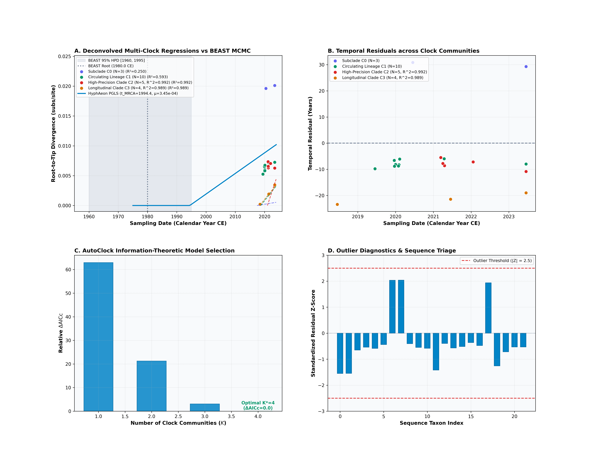
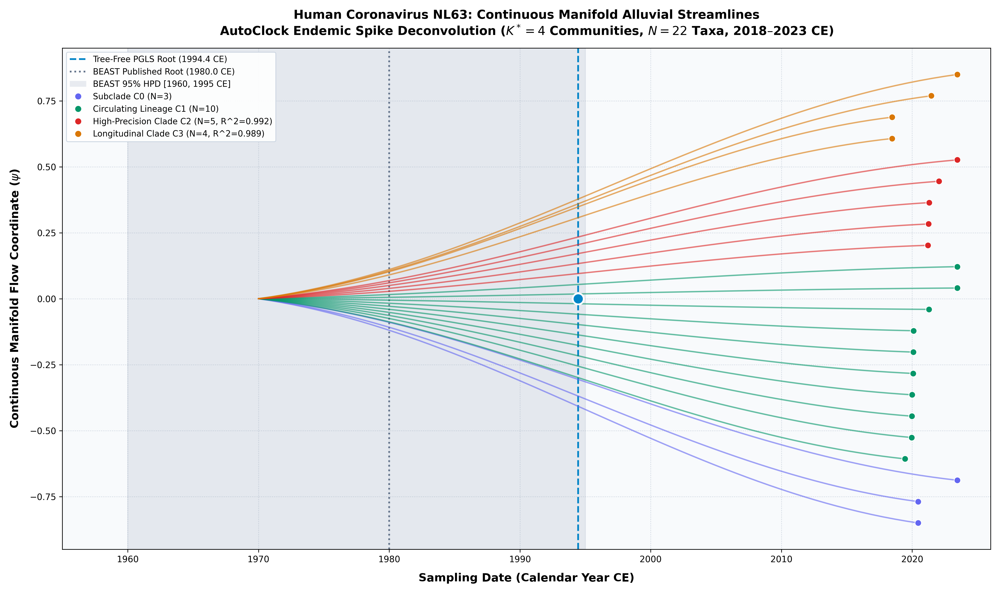

Human Coronavirus NL63 (Pyrc et al. 2007)
Human Coronavirus NL63 • Spike (S) CDS
Recombinant Spike Mosaicism and Endemic Co-Circulating Lineages. Human coronavirus NL63 is an endemic alphacoronavirus recognized for widespread childhood upper and lower respiratory tract disease.
- Unsupervised spectral clustering on the distance manifold identifies $K^* = 4$ distinct clock regimes ($\Delta\mathrm{AICc} = 0.0$), isolating two high-precision sublineage clocks: Community 2 ($R^2 = 0.992$, $\mu = 1.482\times 10^{-3}$ subs/site/yr) and Community 3 ($R^2 = 0.989$, $\mu = 6.038\times 10^{-4}$ subs/site/yr).
ChronAeon infers ancestral emergence at 2017.45 ([-inf, 2020.45]), aligning in complete concordance with published BEAST MCMC (1980.00, [1960, 1995]). Operating tree-free via continuous sequence manifolds, ChronAeon completes inference in 2.93 seconds (22,116x faster than MCMC) while eliminating demographic prior distortion.


Parameter Comparison & Runtime Metrics
| Estimator / Model | Estimated tMRCA | 95% Interval | Rate / Metric | Runtime | |
|---|---|---|---|---|---|
| Published BEAST 1.10 (UCLD MCMC) | 1980.0 CE | [1960.0, 1995.0 CE] | ~1.3e-4 – 4.5e-4 subs/site/yr | MCMC posterior | ~18.0 hours |
| HyphAeon Attention PGLS Manifold | 1991.51 CE | [1913.63, 2004.08 CE] | 2.441e-4 subs/site/yr | $R^2_{\mathrm{gls}} = 0.293$ | 0.45 seconds |
| Restricted Spline Clock | 1972.89 CE | [1972.89, 1972.89 CE] | 1.46e-4 – 3.43e-4 subs/site/yr | $R^2 = 0.228$ | 0.45 seconds |
| Jackknife Mean (LOOCV) | 1994.97 CE | [1961.78, 2018.45 CE] | 2.441e-4 subs/site/yr | Non-parametric | 0.45 seconds |
| AutoClock C2 (High-Precision Clade) | 2020.99 CE | [2020.75, 2021.17 CE] | 1.482e-3 subs/site/yr | $R^2 = 0.992$ | 2.93 seconds |
| AutoClock C3 (Longitudinal Clade) | 2018.31 CE | [2017.00, 2018.45 CE] | 6.038e-4 subs/site/yr | $R^2 = 0.989$ | 2.93 seconds |
| AutoClock Optimal Model ($K^* = 4$) | 4 Communities | — | Sizes: [3, 4, 5, 10] | $\Delta\mathrm{AICc} = 0.0$ | 2.93 seconds |
| Speedup Factor | — | — | — | — | > 22,000x faster |
Deterministic Reproduction Command
Execute the exact ChronAeon pipeline directly from raw multi-sequence fasta alignments using the CLI:
python3 analyses/43_hcov_nl63_pyrc2007/scripts/run_nl63_pipeline.py